February 2, 2021 / By Jenna
These raspberry mousse bars are the perfect balance of tart, sweet, creamy, and rich. The filling has a chocolate cookie base which is then topped with a simple cream cheese raspberry mousse – all dunked in dark chocolate. It’s a sweet no bake treat that can easily be made gluten free. It’s the perfect Valentine’s Day gift!
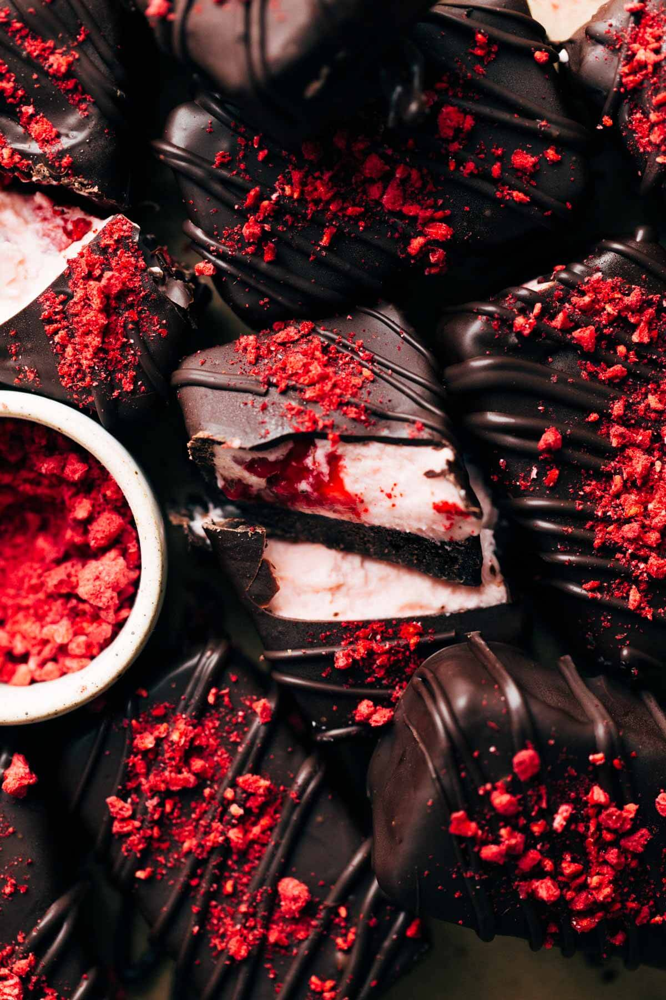 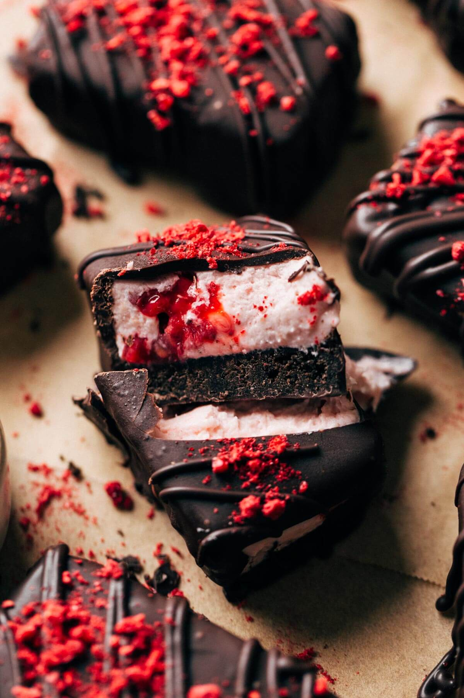Mousse is an underrated dessert that just doesn’t get enough attention. It’s fluffy, creamy, rich, and pairs well with just about anything. But it’s often just served in a cup with a spoon, which is why I wanted to create this dessert as a new way to enjoy raspberry mousse.
Most mousse recipes require a process of heating heavy cream then gradually pouring it over an egg yolk mixture, being carful not to cook and scramble the eggs. This is then chilled and later mixed with fluffy whipped cream to lighten the texture.
For these bars, I needed a mousse that was still light and airy but just a bit more dense and firm. So for this recipe, the base is a mixture of cream cheese and sugar. It creates a much creamier mousse that pairs perfectly with the crisp crust and firm chocolate shell.
Since the base is cream cheese and sugar, this mousse comes together so fast. The cream cheese, sugar, and raspberry puree are combined into a smooth cheesecake-like batter. Then whipped cream is folded into the cream cheese to give it that light and airy mousse texture.
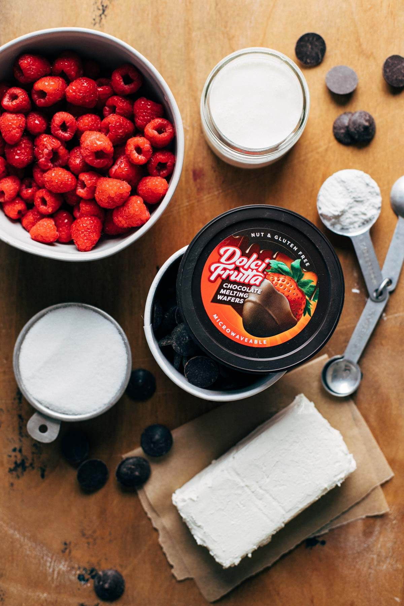 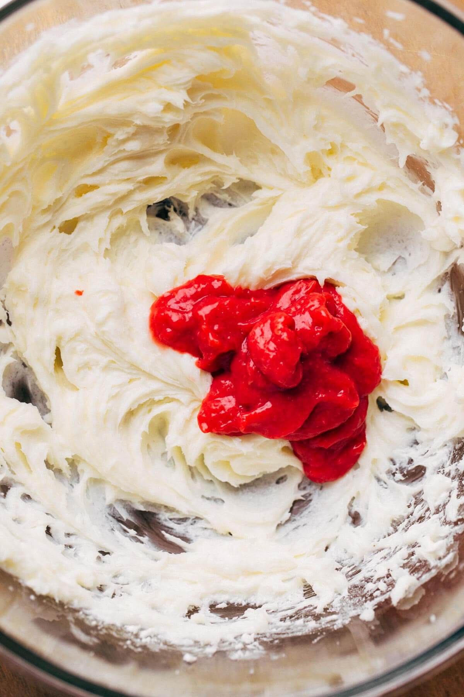Since the mousse is soft and airy, it’s important that the bars are frozen solid before dipping. Otherwise, the bars will lose their shape and begin to melt in to the bowl of melted chocolate.
On top of that, the chocolate dipping process can get a bit tricky. That’s why I highly recommend using Dolci Frutta Chocolate Melting Wafers. Not only does it make for easy clean up, as the chocolate is melted right in its own container, but it also provides the most perfect chocolate shell. The chocolate is melted in the microwave and comes out as the perfect dipping consistency. It’s not too thick, not too thin, and is always smooth and lump-free.
It also hardens very fast, especially on these frozen bars, so the bars are easy to handle and pick up within minutes. Dolci Frutta Chocolate just adds the perfect rich chocolate flavor to these bars that isn’t too sweet or too bitter and makes the entire dipping process so quick and easy.
I find my Dolci Frutta Chocolate Melting Wafers in the produce section at my local grocery store. They’re typically found near the berries or other fresh fruit. Otherwise, you can have Dolci Delicious products shipped straight to your door through Amazon.
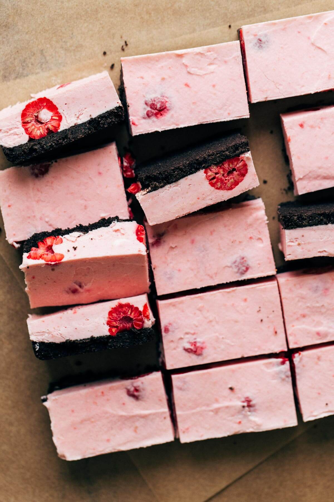This part takes a bit of patience, but after dipping your first couple bars the rest come easy.
By slicing them into 15 bars, they are the perfect size for the Dolci Frutta chocolate container. But I recommend only working with half the batch at a time, so keeping the other have in the freezer so they remain solid. They thaw very quickly so just make sure you constantly keeping them as cold as possible.
Working with a completely frozen bar, dip it into the chocolate crust side down and use a fork to flip it over to coat the mousse side. Then carefully flip it over once again and lift it out, now with the crust on the bottom.
Tap the fork against the edge of the container to smooth out the chocolate and drip off any excess. Then scrape the bottom of the bar against the container and transfer to a plate lined with parchment paper. Use another clean fork to scoot it off the chocolate covered fork and on to the paper.
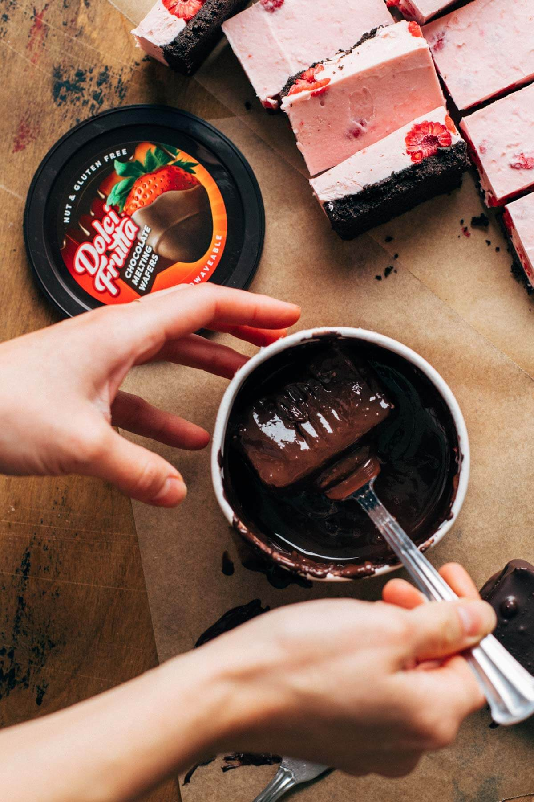You’ll notice the chocolate will start to set pretty quickly on the frozen bars. Once set, drizzle the tops with a bit of extra chocolate and top with freeze dried raspberries.
Now, if your bowl of Dolci Frutta chocolate starts to thicken and cool as you work, you can just pop it back in the microwave for 30 seconds to loosen it up again. And if you have more chocolate in the container but not enough room to drop in another bar, you can place the bar on a wire rack and pour the chocolate on top of the bar.
Once the bars are covered in chocolate, they can now be stored in the refrigerator. The chocolate will hold the mousse in place, so it will begin to soften into a creamy consistency as it thaws under the chocolate.
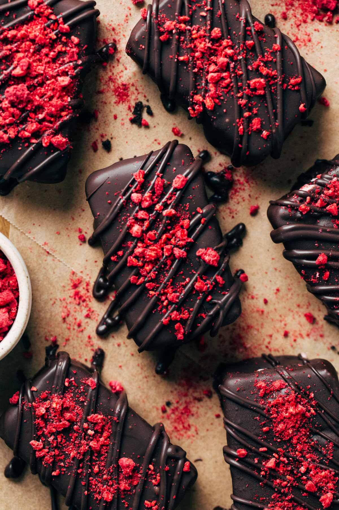Yes, the only ingredient that isn’t gluten free is the chocolate sandwich cookies. But you can easily swap them out with gluten free chocolate sandwich cookies to make this a completely gluten free dessert.
I haven’t tested it, but it may be OK to use frozen raspberries. For the filling, work with thawed frozen raspberries. But for the layer of raspberries on the bottom, keep them frozen.
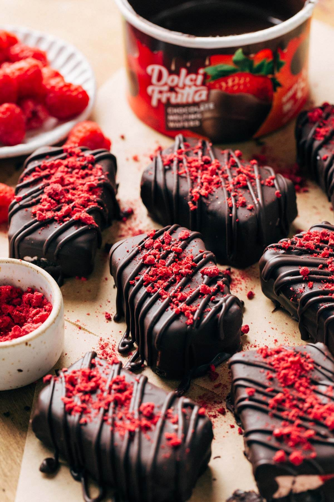
Welcome to Butternut Bakery! I’m here to satisfy your insatiable sweet tooth and help perfect your baking skills. There are desserts here for everyone, whether you’re gluten free, vegan, or love your butter and flour. Either way, you’re sure to find your new favorite dessert recipe.
Read more about Jenna Barnard

January 25, 2021 / By Jenna
This red velvet bundt cake is so moist and effortless, but looks and tastes so amazing! The texture is rich and tender, the flavor has that signature hint of chocolate, and the color is the perfect shade of deep red velvet. The cake is delicious on its own, but I’ve enhanced this recipe by adding a silky cream cheese icing on top. You just can’t go wrong with red velvet and cream cheese!
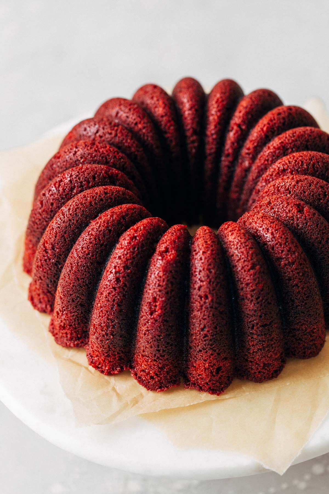 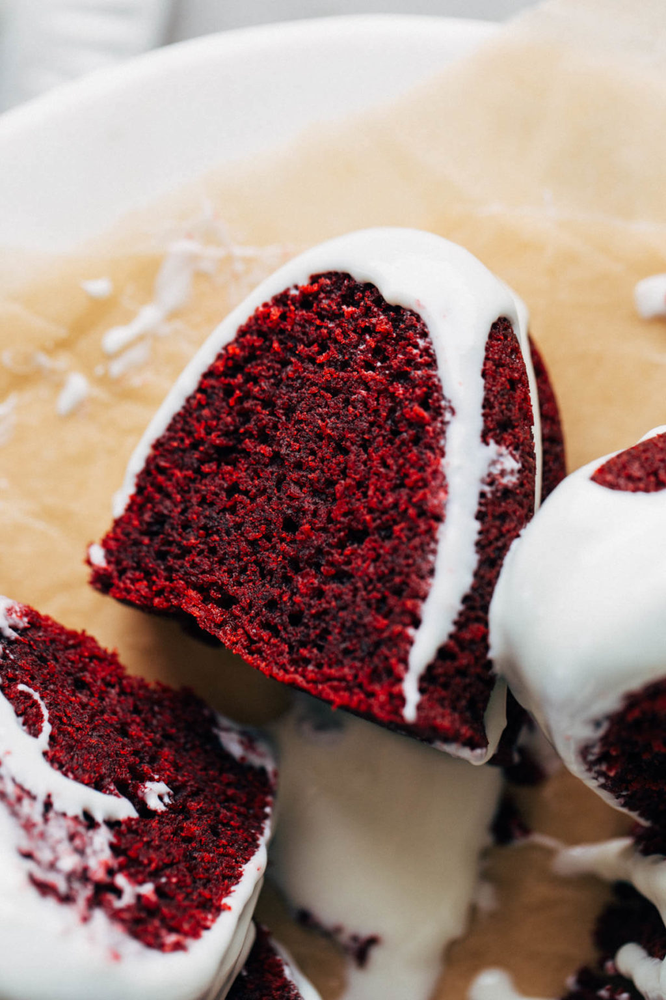You can never quite put your finger on it. It’s a red cake that doesn’t quite taste like chocolate or vanilla and sometimes feels like it’s just a carrier from cream cheese toppings. I’m not even sure anyone can describe the exact flavor of it!
Historically, it was invented in the Victorian era. It was named a “velvet” cake because of its creamy and dense chocolate cake-like texture.
To achieve this texture, buttermilk and vinegar are two very common ingredients in red velvet cake. Once added to the batter, the two activate the baking soda to create a fluffy but “velvety” texture. And when the cake was first created, the cocoa powder used wasn’t alkalized, so it would give the cake a reddish hue when combined with these ingredients.
So with the hint of cocoa and acidity, you’re left with a slightly chocolatey, tangy, and silky red cake. While no one can pinpoint the exact origin of red velvet cake, we’re all in agreement that it’s a REALLY good cake that just never fails.
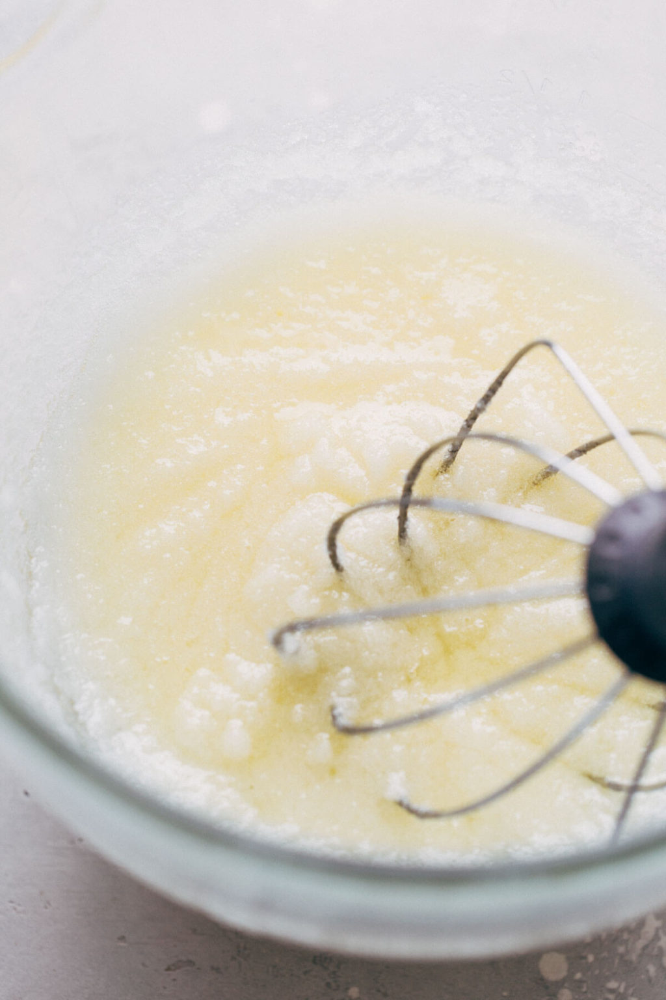 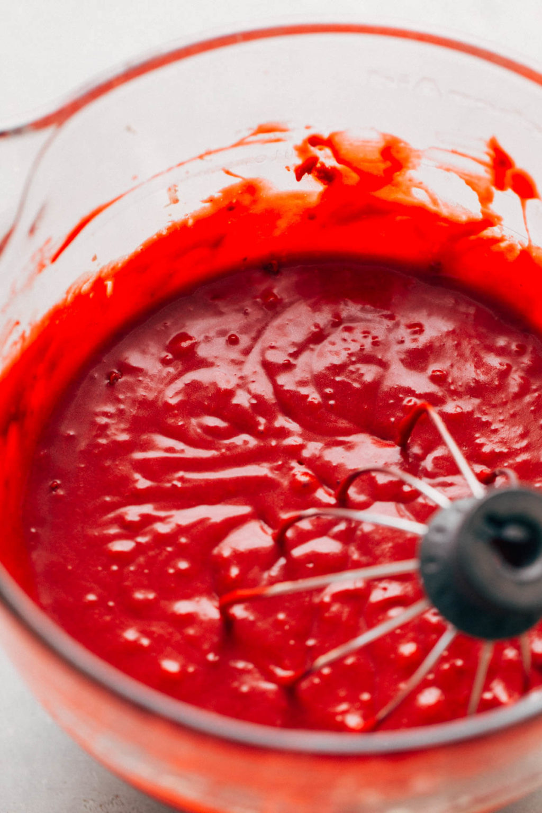I know, I said it…moist. But this really is a super moist red velvet bundt cake OK! It took me four tests to get the recipe just right so you know it’s worth the “m” word.
Most cake recipes either use all butter or all oil. When I first made this recipe, I just used oil and boy did I get one oily cake. You would push your finger into it and you would be left with a pool of oil. No thank you.
The reason this is a super moist red velvet cake is because of the balance between the oil and the butter. Adding oil to a recipe helps it stay moist for a longer period of time. This is because, as opposed to butter, it lacks water so it won’t evaporate and dry out your cake.
But, using all oil can be messy and create a strange flavor…even with a mild oil like vegetable or canola. The butter helps to bring the flavor back down while also giving the cake a little bit more structure once cooled.
Of course, it wouldn’t be a red velvet cake without buttermilk and vinegar. Like I just mentioned, the two in conjunction with baking soda help to give this fluffy but silky texture to your cake. Mix that with the perfect balance of fats and you have the best red velvet cake recipe ever!
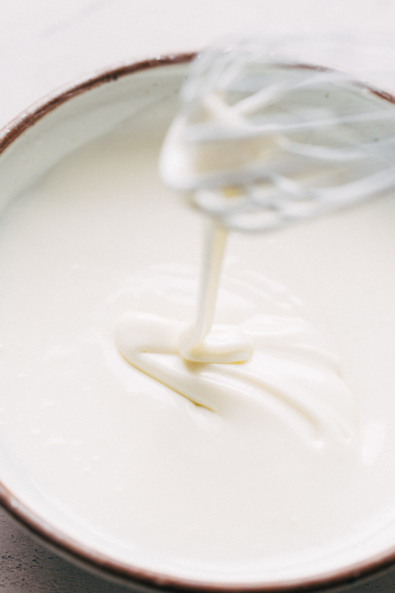 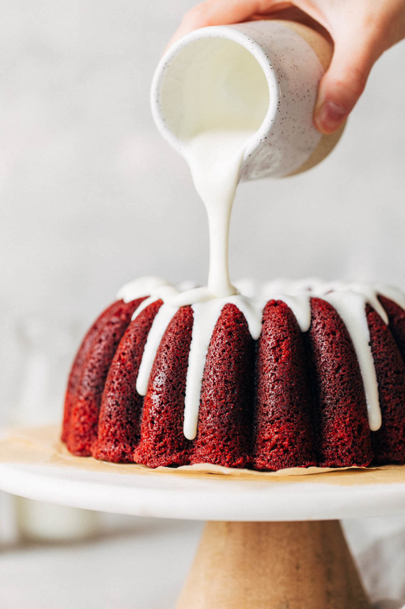To get that signature red velvet color, 2 tablespoons of red food dye are added to the batter. For red velvet cakes, I choose to use a liquid red food dye that you can find in just about any grocery store. It easily blends into the batter without creating an overly vibrant red color.
I would stay away from using gel food coloring as it has a much stronger opacity than liquid food color. It’s very easy to go overboard with the red color when using gel. Although in any other case, I choose to use gel when I only need a few drops to color things such as cookies or frosting.
The icing on top is absolute perfection. It’s creamy, silky, tangy, and the perfect pairing to the moist and rich red velvet cake. Here are a few things to keep in mind when making the glaze:
I’ve had so much trouble with this intricate bundt cake pan, especially with really moist and sweet cakes. But through some trial and error, I’ve found a few solutions that give me the perfect release every time.
Option 1: Right before you’re about to pour the batter into the pan, prep it with a nonstick oil and flour spray. My favorite is Baker’s Joy. But the key here is to spray in short strokes, careful not to let the oil pool in the bottom of the pan. Once you have a light coating, use a fine pastry brush to brush the oil all around the pan, getting every nook and cranny. Then pour in the batter and bake.
When it’s fresh from the oven, set a timer for 10 minutes. This time is the sweet spot because it allows the cake to cool just enough to where it won’t fall apart, but it’s also when the sugars are still fluid and liquid. If you let the cake cool too long, those sugars will harden and your cake will stick to the pan. But after those 10 minutes, the cake should pop right out.
Option 2: Again, prep the pan right before you pour in the batter. But this time, generously grease the pan with oat and then coat it in granulated sugar. The sugar acts as a barrier between the cake and the pan, and it also adds a sweet little crunch to the outside of the cake.
Once baked, let your cake cool for that 10 minute sweet spot. The key is to turn it out while it’s still a little warm. Otherwise, if you let it cool completely, the sugar will harden and then your cake is really stuck.
Your cake should pop right out. No wiggling needed. So if you’ve ever really struggled with your cakes sticking, try this trick!
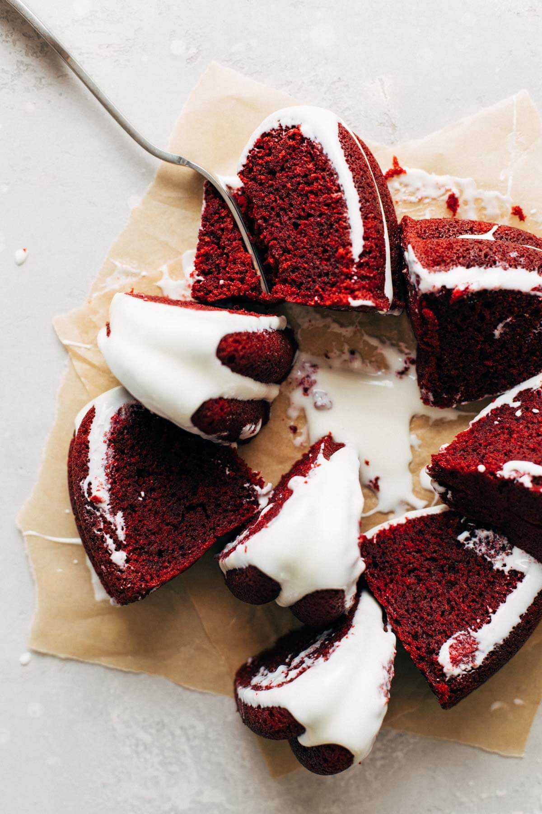
Welcome to Butternut Bakery! I’m here to satisfy your insatiable sweet tooth and help perfect your baking skills. There are desserts here for everyone, whether you’re gluten free, vegan, or love your butter and flour. Either way, you’re sure to find your new favorite dessert recipe.
Read more about Jenna Barnard